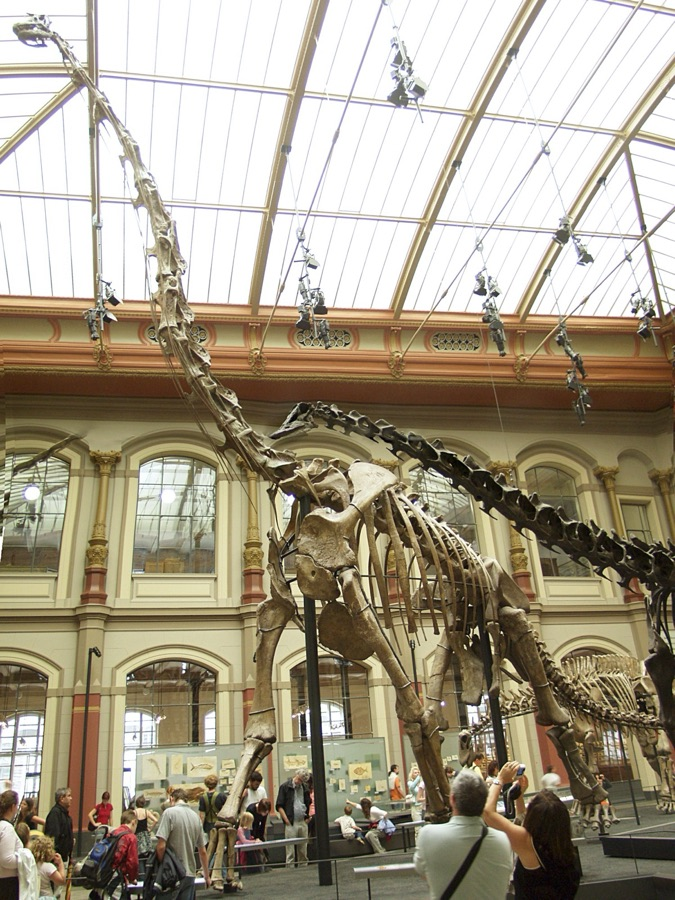

Berlin Natural History Museum
The Giraffatitan skeleton in the museum's central hall stands 13.27 metres high. Set your own height and see what you are actually walking up to.

Numbers like “13 metres” slide right past you until you stand under them. Here is the honest comparison.
The Giraffatitan is 7.8× your height.
standing on each other's shoulders to look it in the eye.
At your height you would reach roughly its knee.
For scale: a full-grown giraffe reaches only its belly, and a double-decker bus barely clears its back. This animal carried its head where a four-storey window would be.